Necropolis (Layer 4) — Ancient Ossuary
Creative vision: Ancient ossuary where the dead were entombed then emptied by Sauron's necromancy. Walls faced with bones, cold spectral light from empty eye sockets.
Palette: dusty limestone grey (#3d3a2e), aged bone ivory (#c8b89d), cold cyan (#4a7f8f), decay brown (#6b5a42), spectral mist blue (#9db4c8)
Tileset location: Row 21, Cols 12-23 (core)
Phase 1: Anchor Tiles REVIEW
Wall (Light)
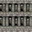
Row 21, Col 12
Wall (Dark)
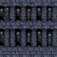
Row 21, Col 13
Floor (Light)
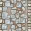
Row 21, Col 14
Floor (Dark)
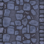
Row 21, Col 15
Phase 2: Doors (Programmatic) REVIEW
Door Closed (Light)
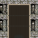
Row 21, Col 16
Door Closed (Dark)
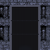
Row 21, Col 17
Door Open (Light)
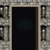
Row 21, Col 18
Door Open (Dark)
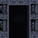
Row 21, Col 19
Phase 3: Stairs (Recolored — Cold Cyan) REVIEW
Stairs Down (Light)
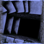
Row 21, Col 20
Stairs Down (Dark)
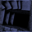
Row 21, Col 21
Stairs Up (Light)
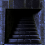
Row 21, Col 22
Stairs Up (Dark)
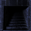
Row 21, Col 23
Phase 4: Environmental Tiles REVIEW
Procedural (on floor base)
Bone Dust (Light)
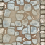
Replaces vine_floor — 1.5x move cost
Bone Dust (Dark)
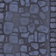
Grave Miasma (Light)
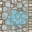
Replaces poison_stream — necrotic damage
Grave Miasma (Dark)
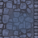
Burial Urn (Light)
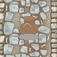
Replaces thick_web_trap — trap
Burial Urn (Dark)
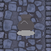
Grave Offerings (Light)
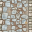
Replaces forest_floor — floor decoration
Grave Offerings (Dark)
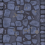
DALL-E (direct resize)
Sealed Sarcophagus (Light)
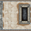
Replaces spider_web — blocks movement
Sealed Sarcophagus (Dark)
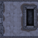
Carved Epitaph (Light)
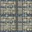
Replaces tangled_roots — wall decoration
Carved Epitaph (Dark)
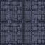
Raw DALL-E Output (256px preview)
Carved Epitaph
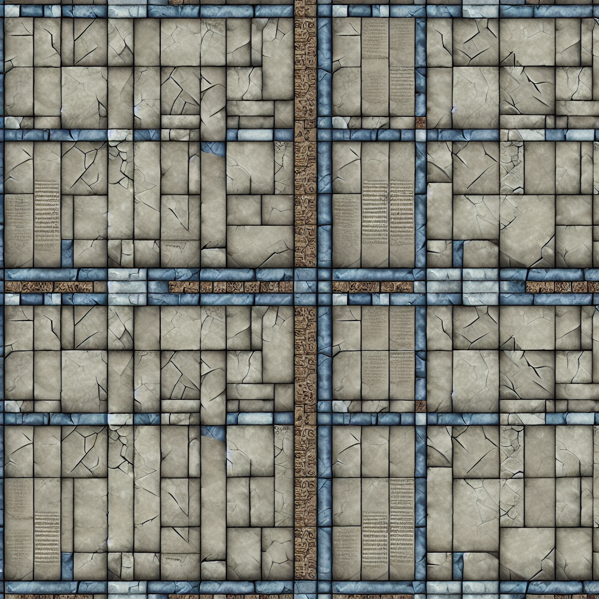